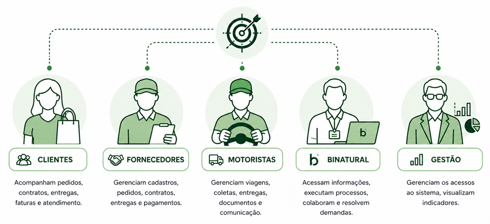
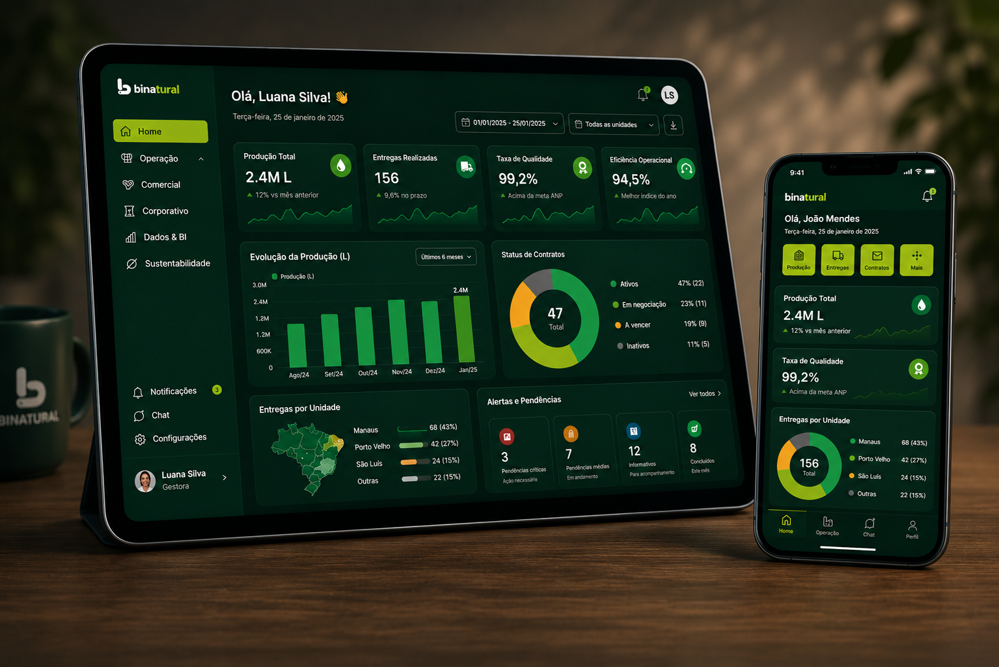

Desafio
Interações descentralizadas, processos manuais e baixa visibilidade entre áreas e públicos.
Super App Corporativo
Estratégia e concepção de um Super App integrado para conectar clientes, fornecedores, motoristas e colaboradores em uma única plataforma digital.
Resumo executivo
Interações descentralizadas, processos manuais e baixa visibilidade entre áreas e públicos.
Super App com 5 módulos para clientes, fornecedores, motoristas, colaboradores e gestão. Core integrado aos sistemas internos
Mais eficiência operacional, transparência, experiência superior e tomada de decisão baseada em dados.
Discovery, entrevistas, benchmarking, priorização de features e definição de roadmap.
A proposta central do Super App é reduzir a fragmentação da experiência, centralizando jornadas críticas em uma plataforma única, escalável e integrada aos sistemas corporativos.

Metodologia
Entrevistas, análise da jornada e entendimento do contexto operacional.
Mapeamento de dores, oportunidades e requisitos funcionais prioritários.
Arquitetura da solução, wireframes, protótipos e fluxos-chave.
Matriz de esforço x impacto, roadmap por fases e definição de MVP.
Planejamento das entregas, integrações, métricas e evolução da plataforma.
Big Numbers AS IS
Dedicadas ao planejamento, execução e entrega do projeto.
Reuniões estratégicas e operacionais com stakeholders, colabotadores e clientes.
Conversas com usuários e áreas para entender suas necessidades e oportunidades de melhoria.
Times de diferentes áreas envolvidos no projeto.
Para entender suas dores a respeito do atendimento de vendas e pós-vendas.
Processos chave analisados para gerar eficiência e valor.
Principais dores e desafios identificados junto aos usuários
e áreas envolvidas.
Clientes, Fornecedores, Motoristas, Binatural, Gestão e Core
Big Numbers TO BE
Entre Clientes, Parceiros, Motoristas e Colaborados.
Cada módulo pensado para atender às necessidades do público.
Entre CRM, ERPs, Sistemas de pátio, Análises, BIs, Pagamentos e outros.
Para redução de trabalhos manuais.
Dashboards e indicadores para todas as áreas.
O Super App Binatural foi estruturado para centralizar jornadas, integrar sistemas e criar uma experiência mais simples, inteligente e escalável para todos os públicos.
